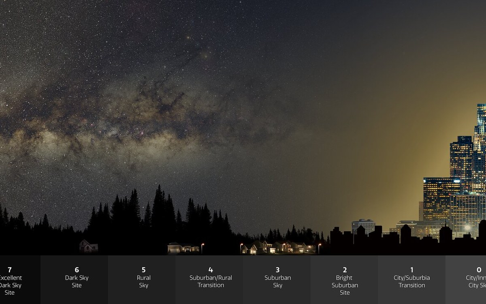
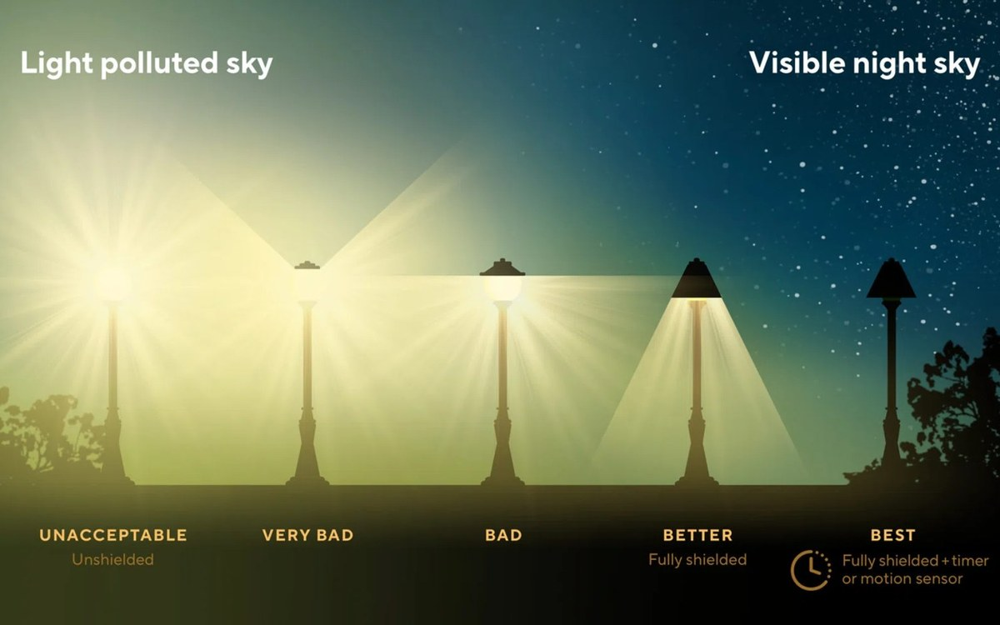
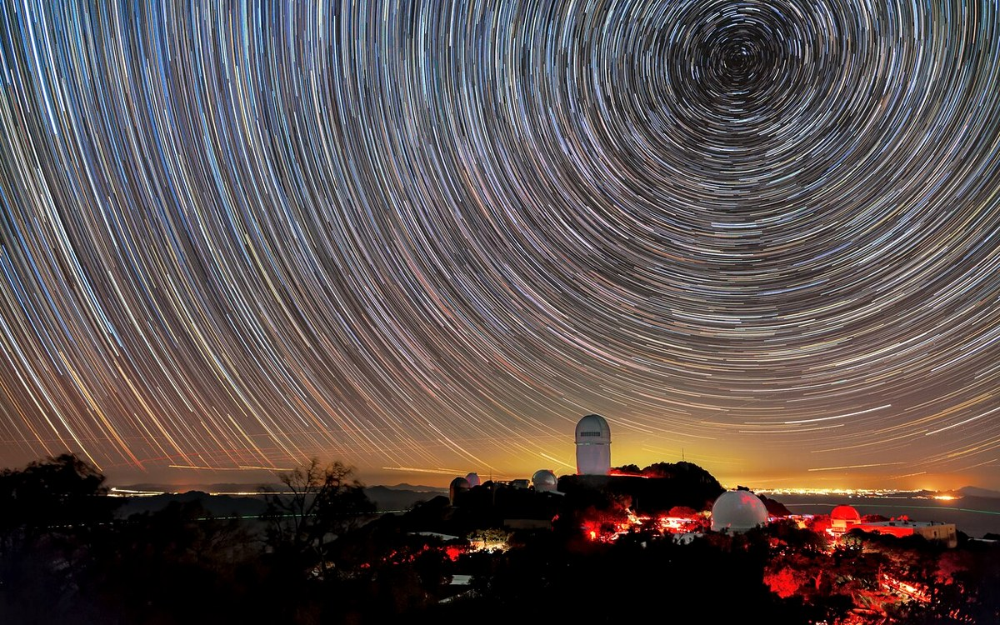
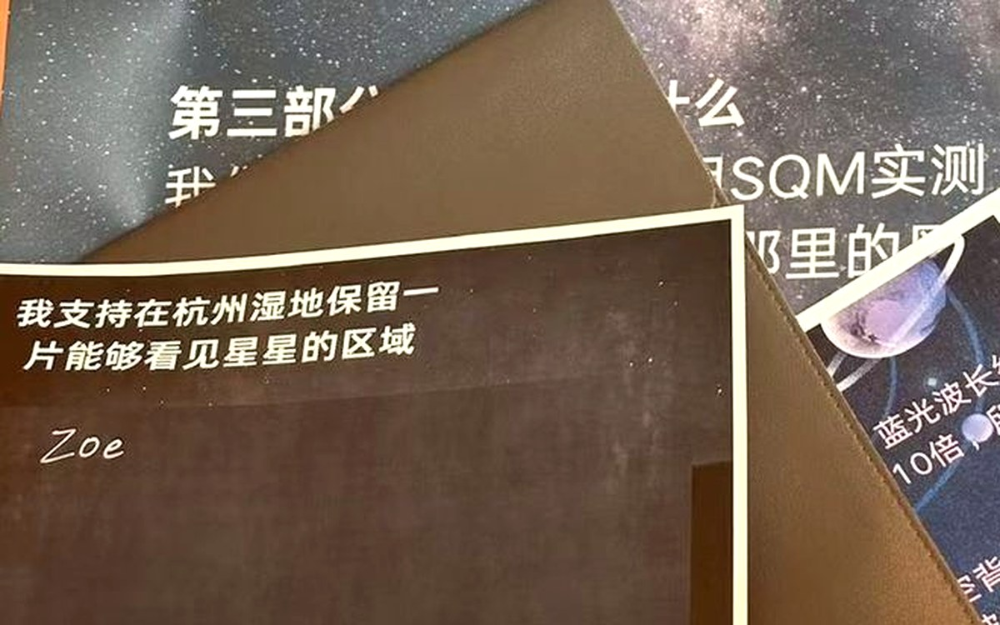

第一部分
光污染
它是唯一一种看得见、却常被忽略的环境污染。 它不留残留物，却改变了整个夜晚。

图片来源：NOIRLab/NSF/AURA/P. Marenfeld
01
光污染是什么
夜间使用人造光带来的不利影响——辉光、眩光、溢光和夜间能见度受损。四种类型，各有各的表现。
了解更多 →
图片来源：DarkSky International（IDA）
02
什么导致了光污染
不是「灯太多」，而是「灯装错了」。向上溢出的光、过高的亮度、偏冷的色温、整夜不灭——四个直接原因。
了解更多 →
图片来源：KPNO/NOIRLab/NSF/AURA/B. Tafreshi
03
光污染的后果
对天文观测、对夜行生物、对人类健康、对能源开支——四个方面的影响，哪些有确凿证据，哪些还在研究中。
了解更多 →
04
我们能做什么
从一盏灯的改变开始。五个可以立刻执行的做法，以及普通人能参与的公众观测。
了解更多 →